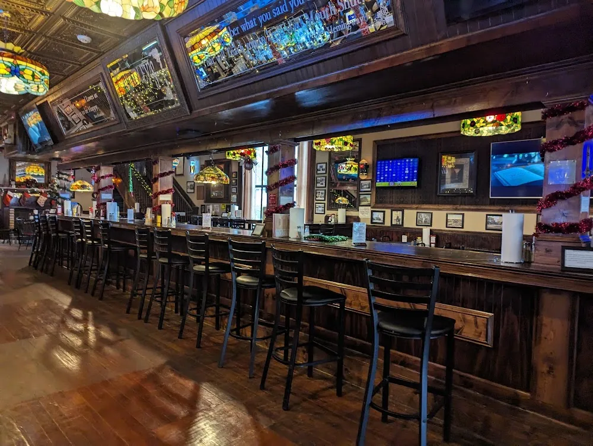
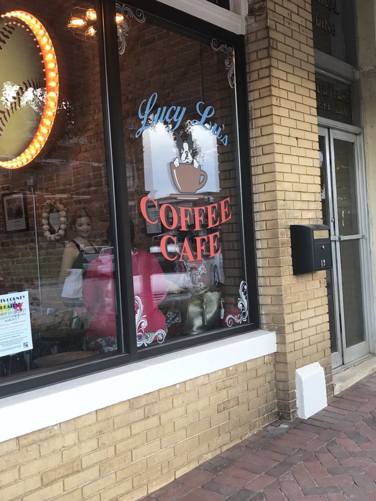
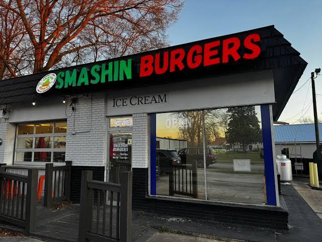
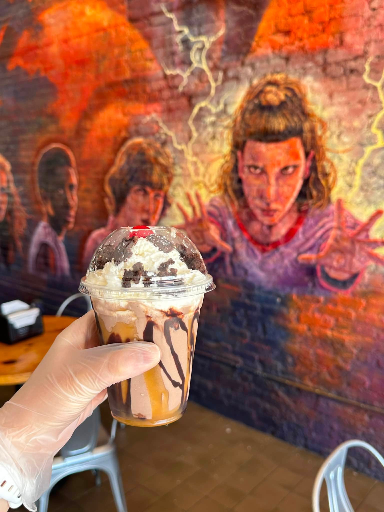

After exploring filming locations from Stranger Things, fuel up with local favorites and discover unique treasures throughout Historic Jackson. Whether you're hunting for waffles, burgers, or Hawkins-inspired souvenirs, there's an adventure waiting around every corner.
Bradley's offers Southern hospitality and classic comfort food. It's the perfect place to recharge after a day of exploring the streets that doubled as downtown Hawkins.

A colorful local favorite serving fresh flavors and a welcoming atmosphere. Grab a meal with your party before your next adventure through the Upside Down.

Craving something delicious after escaping Demogorgons? Smashin Burgers delivers juicy burgers, crispy fries, and satisfying comfort food worthy of the Hawkins crew.

Known for its lively atmosphere and local charm, Buddy Blu's is a great spot to gather with friends and relive your favorite Stranger Things moments over a sweet treat.

The ultimate destination for Stranger Things fans. Browse themed merchandise, collectibles, apparel, and memorabilia inspired by the hit series and Jackson's role as Hawkins, Indiana.
Discover vintage finds, unique gifts, and one-of-a-kind treasures. Every item feels like something Dustin, Lucas, or Max might uncover during an adventure around town.
A charming boutique filled with stylish gifts, home décor, and locally inspired merchandise. It's the perfect stop for visitors looking to bring a piece of Jackson home.